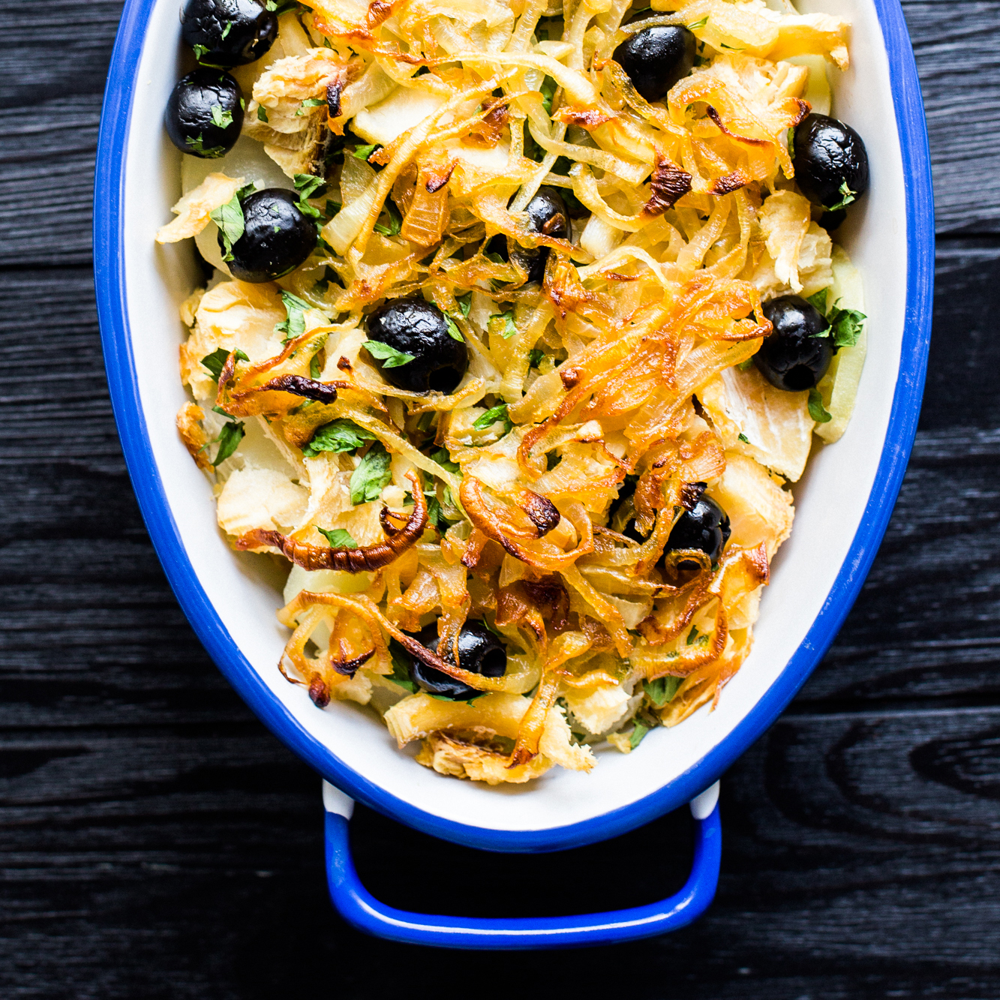

Description
This is a recipe for Portuguese Cod, a dish that is very characteristic to the country's culture. Happy cooking!
Ingredients:
- 6 ounces bacalhau (salted cod), soaked overnight
- 2 medium white potatoes, peeled
- 1/4 cup lard, duck fat or coconut oil
- 1/2 onion, chopped
- 1/2 pinch saffron (about 5 threads)
- 1/2 teaspoon black pepper
- 4 eggs, lightly beaten
- Small handful fresh parsley, chopped
- 3 ounces black olives (10 to 15 total)
Steps:
-
Gently rinse the salt cod under cold water to remove any surface salt.
Soak overnight in cold water (12 to 18 hours) in the fridge, changing the water twice.
Drain the fish, gently rinse again under cold water, then pat dry with paper towels.
Shred the fish into bite-sized strips.
-
Using a cheese grater or the grater attachment of a food processor, grate the potatoes into shreds.
Soak in cold water for 5 minutes, then drain and rinse thoroughly and pat dry with paper towels.
-
Warm the lard or duck fat in a large skillet on medium-high heat until shimmering.
Add half of the potatoes and pan-fry, stirring often to keep the potatoes from sticking together;
remove with a slotted spoon when they turn golden brown, about 5 minutes, and set aside to cool on paper towels.
Repeat this process with the other half of the potatoes.
Reduce heat to medium and discard all but 1 tablespoon of the cooking fat.
-
Add the chopped onion and saffron to the skillet and sauté until the onion is translucent, about 5 minutes.
Add the fish and pepper; gently stir to combine. Allow to sauté until the fish is softened, 3 to 5 minutes.
-
Add half of the fried potatoes, stirring to combine, then pour the beaten eggs over everything.
Scramble the eggs until cooked, stirring occasionally, about 3 minutes.
Stir in the parsley and the other half of the potatoes; add the black olives and serve.